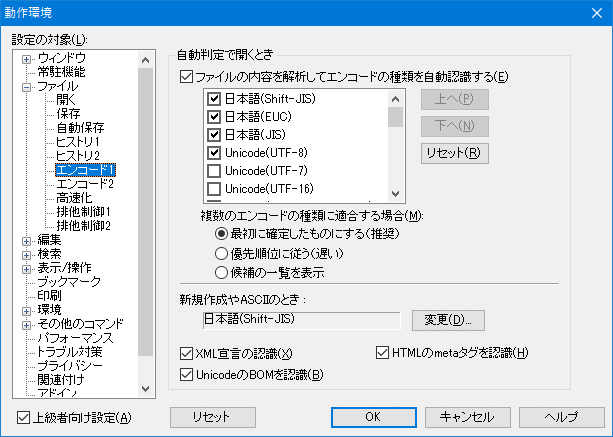

- 秀丸エディタで複数の漢字コードを使い分けたいのですがどうすればいいでしょうか?

秀丸エディタは、基本的には自動的に判別するので、(自動判定が有効になっていれば)何の設定も必要ではないです。 特定のエンコードを使う場合は種々の方法が存在します。 (自動判定で全てのエンコードを、間違いなく判定する保証はないです。)
自動判定を有効にする。
「その他→動作環境」の「ファイル→エンコード1→自動判定で開くとき」で、 「ファイルの内容を解析してエンコードの種類を自動認識する」をＯＮにして下さい。
(「エンコード1」が表示されていない場合は、「動作環境」画面左下にある「上級者向け設定」をONにしてください)
ファイルを開くときに明示的に文字コードを指定する。
メニューの「ファイル」→「開く」等のダイアログで、「文字コード」で正しい文字コードを指定します。
ファイルのエンコードを指定したショートカットを利用する。
ショートカットの作成方法は、テキスト編集を極める！！ 起動オプションを使ってみよう を参照してください。
(EUCコードの場合のみ)保存するフォルダを決めておく。
秀丸エディタの「その他→動作環境」−「エンコード2」にある「EUCコードの指定ドライブ」の欄にドライブを指定し、 EUCコードのファイルはそこに保存する。